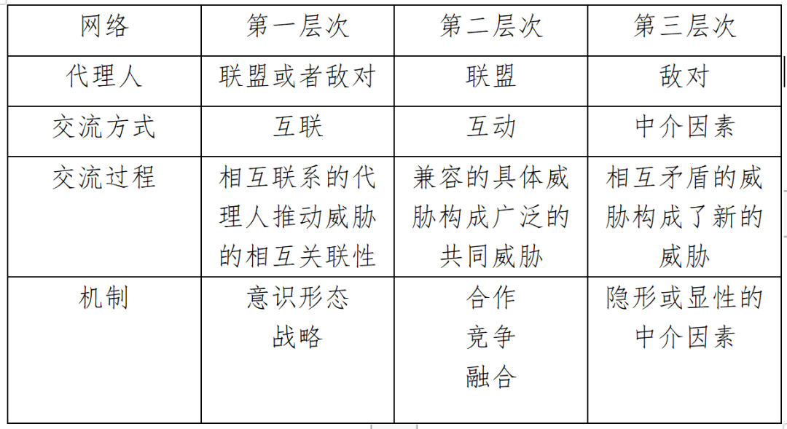
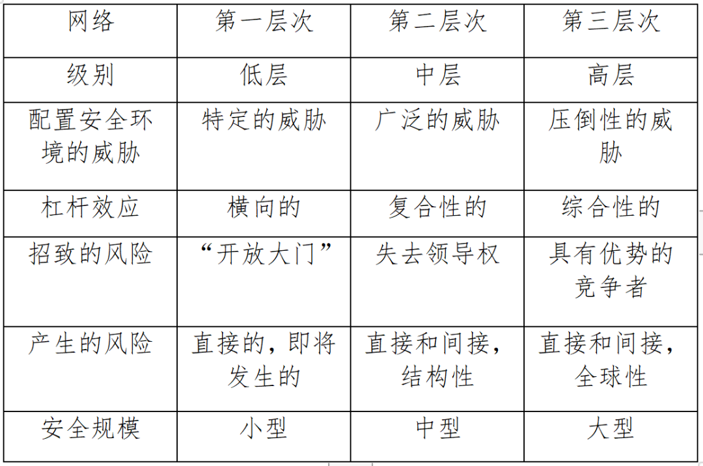
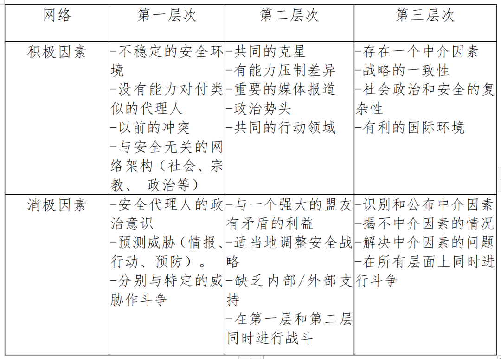

收录于合集 #国际组织 4个

作品简介
作者： Christian Downie，政治哲学博士，巴黎政治学院冲突和安全研究课程讲师，曾任挪威国防大学高级研究员，曾在法国外交部和国防部、欧盟委员会和联合国进行政策类工作。
编译： 董黛（国政学人编译员，中国人民大学国际关系学院国际政治专业硕士研究生）
来源：
Theron, J. (2021). Networks of Threats: Interconnection,Interaction, Intermediation. Journal of Strategic Security , 14(3).
doi:10.5038/1944-0472.14.3.1942.
归档： 《国际关系前沿》2021年第10期，总第37期。
内容提要
快速变化的全球安全环境要求不断调整对威胁的理解。本文的研究结果证实，威胁在三个层面上是相互作用的。安全、冲突、战争和战略研究融合在一起，为威胁分析建立了一个新的定性理论框架。威胁在三个层面上相互作用以塑造全球安全环境。首先，具有类似意识形态和战略动机的安全施动者（security agent）之间相互联系，将不同的威胁也联系了起来。第二，安全施动者之间的合作、竞争和趋同等互动加剧了偶然威胁出现的可能性。第三，在试图实现共同中介目标时，本来对立的威胁之间会出现中介从而朝中介性目标发展。这些威胁网络由安全施动者驱动，威胁的影响在威胁网络的影响下最大化，这揭示了威胁的自主化和社会化。应对这些威胁需要全球性的方法和集体安全的动员。
文章导读
01
引 言
全球安全环境正变得越来越复杂，各行为体愈发相互依赖。因此，学者们必须寻求新的方法来理解安全环境的动态。本文的研究重点不是安全施动者（security agent）本身，而是他们制造的威胁之间的互联现象。基于现有的知识，本文提出了一个理论模型，在三个层面上阐述了威胁网络。尽管威胁总是由安全施动者发出的，但这些威胁可以相互联系，并且可以在相互兼容甚至对抗的基础上互动。本文所提出的模型并不能解释所有冲突的本质；然而，就塑造当代安全环境的各种威胁而言，这个模型可以帮助学者们探索这些威胁之间尚未被研究过的关联。该模型不能预测威胁，但是这一模型可以用新的视角支撑威胁研究的理论构建。
02
理论方法
本文重点讨论不同威胁之间的相互作用如何塑造安全环境。在讨论方法之前，有必要从“威胁”和“网络”核心概念的综合、跨领域的定义开始。目前没有一个统一的“威胁”定义。本文并不根据对危险的认识来区分威胁和风险，而是根据其潜在性来区分。风险在本文中被理解为潜在的威胁，而威胁则是已经发展成积极危险的风险。威胁网络的定义也以更多样的方式得到了更直接的处理。这个词的词源多义性与三种不同方法相对应：即威胁处于相互关系中，威胁处于共融中，以及威胁具有共同性。
一部分学者断言，威胁有能力相互联系。另一部分学者描述了威胁更积极互动的能力。他们认为，通过相互联系，特定的威胁可以构成一个更广泛的“威胁网络”（network- based threat）。还有一部分学者将威胁网络的概念推进得更深。他们寻找一种改善威胁评估的方法。考虑到由于行为体的意图和能力导致的威胁不确定性，他们建立了一个威胁网络来更好地理解复杂的安全环境。
作者按照三个层次概述了挑战和研究问题：
一、 安全行为体与他们产生的威胁相互关联。 相关的挑战是要明确区分安全行为体和威胁。安全行为体是试图实现特定目标的个人或团体行为者；威胁是由他们制造的敌对现象。虽然没有威胁真正独立于安全施动者而存在，但代理人很少能够完全控制他们所引起的威胁，代理人发出的威胁深受物质变量和第三方代理人的影响。代理人发出并调整威胁，但无法完全控制它们，这诱发了“安全和不安全的共生性。”本文研究了威胁的自主性这一论题，并研究了推动安全施动者与其威胁相互联系的传导者的性质（研究问题1）。
二、兼容的威胁之间可以积极互动。 本文研究的内在挑战涉及到先验相似的威胁如何进行互动。因此，必须辨析威胁的积累和威胁之间的交流两者之间的区别，从本质上讲，威胁的积累是威胁间进行交流的必要前提，因此，这两个过程不是对立的。威胁通过今天的全球信息化和全球的通信大规模地社会化。安全施动者之间任何类型的信息接触，无论多么松散和非正式，都是威胁的潜在互动渠道。本研究试图了解这些互动的不同机制（研究问题2）。
三、在交易模式中，理论上威胁之间可以相互关联，即使发出这些威胁的安全施动者是相互对立的。 从这个角度来看，认识到威胁不一定与他们的代理人保持一致，甚至可以违背他们的代理人所宣布的目标进行操作，是十分困难的。由于威胁自治论，威胁可能会在其代理人的意志一致或不一致的情况下发生关联。在发出威胁的行为体处于对立状态且没有正式合作的前提下，威胁也可能在客观上自行相互作用。这个悖论可以解释已宣布敌对的代理人如何构成共同的威胁。因此，本文也要研究这些中介如何运作从而促成威胁的相互作用（研究问题3）。
上述三个研究问题是相互依存的，需要一个共同的方法论去解决。威胁分析中的情境效应模型是一种方法；然而，这种方法只集中于一种威胁——基于一个族群对其他族群的政治统治的权力威胁。威胁曲线法提供了对多重威胁系统的洞察力，但不注重沟通过程。定量的数据挖掘和分析也是一种选择，但这种方法需要一种概率性的归纳方法。较早的案例可能包含相关的内容，但过于依赖其特定的历史背景，如当时的国际秩序、社会政治习惯或技术发展状况。本文并不试图详尽地引用所有相关的例子；相反，本文选择了相关的案例研究，以加强对威胁如何在网络的三个层次上沟通的理解。
03
第一层次 ：相互 联系
对威胁联系的分析必须从研究代理人之间的联系开始。在这方面，意识形态和战略都是潜在的传导者。意识形态可以将隶属于同一思想体系的安全施动者联合起来，而战略则可以将代理人推向一个共同的议程。这是两种不同的相互联系机制。
3.1 意识形态
**
**
意识形态似乎是最自然的传导者。意识形态承担联系机制指挥者的例子很多，包括社会主义国际主义、欧洲民族主义和亲伊朗的什叶派联盟。西苏丹革命力量联盟是由正义与平等运动和苏丹解放运动之间的相互联系产生的。对达尔福里民族主义的一致信念使这两个组织联合起来反对喀土穆。
意识形态也可以将属于不同安全环境的安全施动者联系起来。 例如，具有类似信仰的萨拉菲圣战组织活跃在世界各地，包括菲律宾南部的棉兰老岛，高加索北部的达吉斯坦，以及非洲东南部的德尔加多角。一种全球性、整体性、目的论和末世论的意识形态将这些团体联合起来。他们只是根据其特定的安全环境进行调整，经常利用现已存在的冲突。
这些例子证明了意识形态作为威胁传导者的潜力。然而，意识形态的紧密结合并不一定带来更紧密的联系。 对这一点想要展开细致的论述则离不开相关的背景。例如，民族主义运动可以促进代理人的相互联系，但代理人并不总是急于这样做。20世纪90年代在塞尔维亚和克罗地亚重新出现的切特尼克和乌斯塔莎民族主义运动是相互对立的。然而，这两个运动的构造是相似的，都是民族和宗教归属感的结合。可以说，民族主义代理人在本质上是不相容的，他们的理念基于自我宣称的优越性。
意识形态间的相互联系不是必然存在的。意识形态可能导致代理人相互联系，但也可能将自然盟友变成敌人。意识形态是一个自然存在但不确定的联系机制，具体如何发生作用取决于战略的指挥者。
3.2 战略
**
**
无论意识形态如何，战略合作都会聚合中等国家和全球大国的利益 ，如叙利亚和俄罗斯或朝鲜和中国。这些联系在动荡地区尤为重要，因为代理人面临着生存威胁。因此，无论意识形态如何，战略都能促使代理人将其威胁用于针对共同的敌人。
克里斯蒂亚认为，确定共同的战略目标对于“赢得战争和最大限度地提高该组织在战后政治控制中的份额”至关重要。她说“身份——无论是种族上的、语言上的、宗教上的还是意识形态上的——似乎一直都不是联盟形成的原因。”因此，战略是比意识形态更有效的导体。
在实践中，战略作为指挥者甚至可以影响意识形态。如果一个国家与一个使用恐怖手段的中东非国家暴力行为体结盟，那么这个国家就会试图从意识形态上将这些手段重新定义为抵抗，而不是恐怖主义。代理人通过意识形态或战略将他们的威胁相互连接起来，并以这种方式构成第一层次的网络。这种连接启动了威胁的自主化，威胁相互连接后，这些威胁可能会与代理人脱离关系，并触发更多层次的、更加综合的威胁网络。
04
第二层次：相互作用
上一节讨论的相互联系刺激了威胁之间的互动。事实上，阿莱森•柏雷丝女士强调了威胁在塑造安全环境方面相互依赖的重要性。下述的案例研究将证实这一观点。
例如，当代全球圣战主义是由一些人物的融合而形成的。“基地”组织早年所构成的威胁与阿富汗和苏联的战争有关，具有特定的背景。然而，基地组织利用圣战者的国际网络，在最终实现圣战威胁全球化方面发挥了核心作用。随着最初由基地组织在2001年的9·11事件到2014年的伊斯兰国出现为止期间制造的威胁声名狼藉，该组织逐渐失去了对更广泛运动的控制。许多代理人与共同的意识形态/战略相互联系。
因此，当威胁在一个新的、更广泛的威胁中相互作用时，威胁可以与其代理人分离。这证实了威胁自治论。此外，每个具体威胁的演变都会改变这个广泛威胁的方向，而且具体的威胁驱动着更广泛的威胁，因此，威胁间的互动支持威胁的社会化论。
4.1 合作
在美国极右翼极端主义的广泛威胁中，每个运动都是相当独立的。三K党、新纳粹组织、和博古斯等都没有相同的意识形态，也没有共同的综合战略。此外，无党派的极右翼个人激进分子的动机甚至更为与众不同。代理人通过偶然的意识形态和类似的战略（第一层次）将他们的威胁相互联系起来。这种互动刺激了每个代理人的具体威胁，加强了广泛的威胁。
具体威胁的目标也可能与广泛威胁的目标不同，这进一步支持了广泛威胁自主性的设想。事实上，加泰罗尼亚、佛兰德和帕达尼亚的分离主义分别是西班牙、比利时和意大利面临的具体威胁。然而，分离主义分子不仅相互联系（第一层次），而且还积极合作（第二层次）。这就形成了针对不同目标的广泛威胁：对欧盟的威胁。这些威胁之间的互动所诱发的广泛威胁可能导致欧洲大陆的巴尔干化，并最终导致欧盟政治架构的崩溃。
4.2 竞争
全球圣战主义和美国极右派的例子表明，相关主体之间的吸引力来自于意识形态和战略的或多或少的一致性。然而，具体的威胁不仅在代理人合作时可以相互影响，在他们竞争时也会诱发共同的广泛威胁。基地组织和伊斯兰国在萨赫勒地区的激烈竞争就是一个明显的例子。伊斯兰人民阵线（Jamaat Nusrat al-Islam wal Muslimeen，JNIM）和伊斯兰国西非省（ISWAP）相互之间存在战略竞争。两个组织之间的竞争并没有降低威胁程度；相反，竞争既激发了他们的具体威胁，也加强了他们造成的广泛威胁。
4.3 趋同
无论代理人是合作还是竞争，他们最终都会融合成一个实体，将他们的多种威胁转化为单一威胁。这种趋同可以通过融合、效忠或吸收发生，2010年代在叙利亚活动的非国家暴力行为体就是证明。当一个广泛的威胁有一个统一的目标时，构成这一广泛威胁的具体威胁可能会逐渐失去其特殊性并合并起来。代理人可能合作或竞争，但在一定程度上也会共享意识形态和战略。然而，严格意义上的对立威胁也可以共同造成广泛的威胁。
05
第三层次：中介
正如谢林所解释的那样，威胁可能是明确的互动，但也可能是默契的互动，使对立的代理人能够或多或少地公开合作。代理人可能在意识形态上和战略上是对立的，但还是可能激发出一种压倒性的威胁。这种第三层次的威胁网络强调了中介因素的作用。
5.1 机制
一些案例研究支持“相互对立的威胁构成了新的威胁”这一观点。例如，以色列和沙特阿拉伯搁置了意识形态和战略上的分歧，联手对付伊朗。对伊朗来说，这构成了由两个不同的敌人组成的明显的压倒性威胁，并可能造成毁灭性的后果。例如，以色列可能会利用沙特阿拉伯王国来攻击伊朗的核设施。叙利亚也出现过类似的情况。这一机制也出现在支持什叶派神学制度的伊朗伊斯兰共和国和信仰不同的德班迪原教旨主义的塔利班之间，以及在一定程度上支持全球萨拉菲圣战主义的基地组织。所有这些具体的威胁都在中间形成了一种压倒性的威胁，尽管其代理人在意识形态和战略上存在着对立。
同样的机制也可以适用于对立的广泛威胁，如萨拉菲圣战主义和欧洲极右翼对民主国家两者之间的中介因素。这两种广泛威胁的目标是推翻民主国家，建立替代性的专制政权。然而，这两种威胁都没有单独的力量来实现这一目标。因此，他们联合起来以达到一个暂时的共同目标：安全上的不稳定。事实上，对这两个运动来说，从目前的状况（由民主国家保证的稳定秩序）过渡到他们的目标（新的政治秩序，无论是萨拉菲还是民族主义专制）都需要通过一个共同的中介状态（安全环境的崩溃）来实现。正如这些例子所说明的，代理人可以同时成为敌人和盟友，以达到中间目标。他们的威胁是同时进行的，也是相互对抗的。因此，由于有了中介因素，压倒性的广泛威胁比对立的具体威胁会造成更加深远的影响。
5.2 中介因素
上一节讨论的萨拉菲圣战组织和极右派的组合说明了反民主教条在各种运动之间的中介作用。各方人员不需要见面就能形成这样的中介因素，也不需要正式同意就他们发出的威胁进行合作。鉴于这些代理人是实际上的敌人，这种正式同意的情况往往不太可能发生。然而，中介因素是事实存在的。
例如，叙利亚政权镇压了与恐怖主义有关的民主运动，并利用圣战主义使革命激进化。他们这样做的目的，是以威胁的方式驱逐所有的温和派，避免在叙利亚建立一个新的、由西方支持的安全环境。
06
结论
基于现有的知识，这篇文章探讨了威胁通过网络互动塑造安全环境的方式。通过案例研究开发的模型提供了理论上的见解和政策指导，也提出了有待调查的新问题。
6.1 该模型的有效性
本文研究的案例包括在不同地区安全环境（美国、西欧、东欧、巴尔干、萨赫勒、中东、东非、南亚）中演变的各种代理人（极左、极右、逊尼派圣战主义、什叶派圣战主义、分离主义）。这项调查证实了以前的研究结果，即存在一个由三个层次组成的威胁网络架构。在三个研究问题上，选择定性推理的方法产生了以下结论。
I. 代理人确实将他们的威胁联系起来，动机更侧重于战略而不是意识形态。个人和团体试图利用其特定威胁的力量，并在此过程中启动了威胁的自主化。
II. 由结盟的代理人发起的威胁通过几个机制进行互动，确认其自主性。通过社会化，他们塑造了一个广泛的威胁。
III.一个中介因素使得由对立代理人塑造的威胁自相矛盾地交融。威胁暂时达到一个共同的中介目标，同时产生一个针对共同敌人的压倒性的威胁。
第一个层次是实施第二和第三层次的必要条件。换句话说，互联是互动和中介因素出现的先决条件。

6.2 理论贡献
本文提出的模型对安全研究做出了若干贡献。威胁网络揭示了威胁的结构化能力，借助联系，威胁通过成为“危机的原因和模式”来塑造安全环境。由于威胁设计了安全环境的模式，威胁的网络架构在逻辑上增加了其复杂性。 通过相互联系，具体的威胁决定了安全环境的一般结构；通过相互作用和中介，广泛的和压倒性的威胁创造了一个威胁性的上层建筑。
此外，本文所研究的案例表明，威胁的网络架构使代理人在所处的安全环境中下，负外部性会最大化。威胁的网络架构使敌对行动的类型和概率多样化。这种情况在第一层次尤其明显，因为具体的威胁最直接且最紧迫。在第二和第三层次，识别威胁的代理人的难度放大了风险。第二层次集合了偶然的具体威胁，出现了超越其各部分之和的广泛威胁。因此，这里的风险也是间接的，但却是结构性的。在第三层次，由于网络将对抗性的威胁联系在一起，风险对安全环境的影响更加全球化。这种风险也是间接的，但也是全球性的。
最后， 威胁网络在多个层面上发生作用。在第一层，具体的威胁更直接，更尖锐，在较小的安全规模上运作。这并不意味着影响会很小，但威胁可以直接转化为敌对行动。第二个层次整合了具体的威胁，但也通过广泛的威胁涉及到更多的战略安全规模。由于多种战略形成了压倒性的威胁，因此第三层次将会以更大的安全规模来部署。
**
**

6.3 政策贡献
该模型表明，对威胁网络的误解增加了安全化进程出现差错的可能性。单独解决一个威胁可能最终会使整个安全环境恶化。本文介绍的模型可以帮助读者更好地理解安全环境如何设计： 1) 分析特定威胁的结构，以及威胁间活跃的或潜在的相互联系，因为第一个网络层次对于第二个和第三个层次的产生是必要的。2）通过先进的情报收集和分析，审查结盟的代理人之间的互动动态，并加强对广泛威胁的战略理解。3）评估敌对行为体的利益、能力和机会，通过相互矛盾的具体威胁，明确或默示地利用中介因素。
需要注意的是，威胁的变化取决于代理人的战略和物质条件。因此，分析家和政策制定者必须长期重新审视威胁的网络架构。本文研究的各种案例表明，背景因素对网络有积极和消极的影响。这些因素可能有利于或限制威胁构成网络的能力。

从政策的角度来看，从这篇文章中可以得出的教训是，威胁几乎总是在相互作用，即使是间接的。这意味着安全政策必须是全球性的，必须全面考虑安全环境，不仅要注意威胁的整体性，还要注意其代理人的复杂性。本文还表明，安全政策不能避免外部合作，特别是在处理较高层次的威胁网络时。集体安全，特别是在区域基础上的集体安全，对于解决超出地方或国家边界的威胁网络似乎至关重要。从相互联系到互动和中介的转变，也可以作为单独研究的对象。
不可避免地，本文有几个局限性，需要进一步研究。 第一层次，相互联系的动机可能因某些意识形态而不同。 自给自足是某些意识形态的一部分（例如，社会主义自治主义或民族主义地方主义）。虽然意识形态是一个相对的中介，但它可能在调节威胁的相互联系方面起着实质性的作用。此外，一些代理人可能有意限制外部联系，如自愿隔离的原住民（安达曼、巴西、新几内亚）。其他代理人则可能以保护性（朝鲜、红色高棉）或强迫性（克钦独立组织、西巴布亚联合解放运动）的方式来限制联系。
关于第二层次，当代理人的能力发生变化时，各种威胁之间的互动也会迅速发生变化。 叙利亚的民主和圣战非正规部队的演变显示，这两种竞争性的广泛威胁的力量平衡很快就被逆转了。另一个问题是代理人在其威胁互动时会出现模糊性或重复性的问题。这些代理人可能会掩饰自己的意愿，从而使得难以评估适当的互动类型。最后，由竞争性互动（第二层次）建立的广泛威胁也可能变成压倒性的威胁（第三层次）。事实上，如果出现重要的战略分歧，结盟者可以切断他们之间的联系。如果结盟的代理人成为对立面，他们的网络可以继续作为中介因素而不是第二层次的互动来运作。这种现象也可以进一步探讨。
关于第三层次，主要的限制是如何辨别出于默契而产生的中介因素。 由于压倒性的威胁可能在代理人没有明显合作的情况下运作，这种现象必须通过分析而不是事实证明来评估。这需要对不同的代理人有很好的了解，而政策研究者很少有这种能力。当代的安全环境致使全世界任何地方都有可能出现意想不到的第三层次的威胁网络。
最后，在更大程度上，威胁评估过程经常不能正确处理特定的安全环境，从而造成灾难性的后果。事实上，为了保持在激起敌方反应的门槛之下，敌对的代理人经常通过故意保持低威胁，同时通过多个网络来愚弄他们的敌人。
译者评述
本文作者引入了大量案例分析不同的安全施动者如何在迥异的地缘政治环境下构成和发出威胁、塑造全球的安全环境。本文在对案例的分析中搭建起了一个新的威胁分析定性理论框架：分析不同安全施动者发出的威胁间的相互联系、相互作用、中介因素以及以上三个层面的交互和转换，并提出了威胁理论有待进一步发展和完善的理论问题。
本文兼具理论价值和政策价值，对于如何从理论层面分析威胁网络的形成、如何从实操层面应对复杂的威胁网络都提供了新的分析角度和经验借鉴，作者举出了大量实例来帮助读者理解威胁如何在三个层面进行交互，并提出了如何去构建威胁分析框架的实际操作步骤。
本文提出的理论框架也有其明显的局限性，正如作者所说，本文的模型在运用中会出现难以分别代理人和其发出的威胁，中介因素难以得到明确识别的问题。此外，本文运用对实例的类比和分析得出了这一威胁分析模型，但是却没有用实例对这一模型的分析能力和可行性做出证明，这一模型对威胁的分析能力有待进一步得到证明。
词汇整理
安全施动者 Security agent
威胁网络 network-based threat
伊斯兰人民阵线 Jamaat Nusrat al-Islam wal Muslimeen（JNIM）
伊斯兰国西非省 ISWAP
审校 | 赖永祯 董诗
排版 | 彭雯昕 胡蝶
文章观点不代表本平台观点，本平台评译分享的文章均出于专业学习之用, 不以任何盈利为目的，内容主要呈现对原文的介绍，原文内容请通过各高校购买的数据库自行下载。

国政学人
支持学术公益与知识传播
微信扫一扫赞赏作者 __赞赏
已喜欢，对作者说句悄悄话
取消 __
发送给作者
发送
最多40字，当前共字
上一页 1/3 下一页
长按二维码向我转账
支持学术公益与知识传播
受苹果公司新规定影响，微信 iOS 版的赞赏功能被关闭，可通过二维码转账支持公众号。